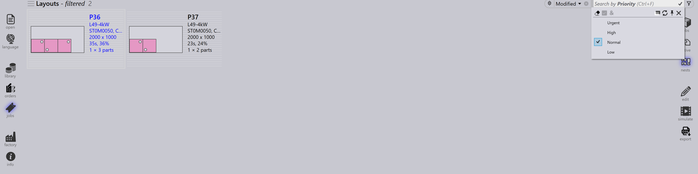

작업 필터
Job Page Filter 는 선택한 조건에 맞는 항목만 표시하여 Jobs, Active Parts 및 Nests 를 찾는 데 도움이 됩니다. 작업이나 부품을 찾고, 정렬하고, 관리하는 것을 단순화하여 워크플로의 전반적인 효율성을 향상시킵니다.
사용 가능한 필터 예시
Priority and Due on
-
Priority 필터를 사용하면 할당된 우선순위(Urgent, High, Low, Normal)를 기준으로 부품이나 작업을 검색하고 표시할 수 있습니다.
-
특정 우선순위 수준을 선택하면 해당 특정 우선순위의 부품만 결과에 강조 표시되거나 표시됩니다.
-
예를 들어, High Priority 를 선택하면 시스템은 네스트에서 High Priority 로 표시된 부품만 필터링하고 강조 표시합니다.

-
Due on 필터를 사용하면 할당된 날짜를 기준으로 부품이나 작업을 검색하고 표시할 수 있습니다.
-
특정 납기일을 선택하면 해당 특정 납기일의 부품만 결과에 강조 표시되거나 표시됩니다.
-
Today, Yesterday, Tomorrow 등과 같은 사전 정의된 납기일 필터 외에도 검색 텍스트 상자에 yymmdd 형식으로 사용자 지정 날짜 값/범위를 입력할 수 있습니다.
-
날짜 값 뒤에 부등호 연산자(<, <=, >, >=, =)가 있는 표현식을 사용할 수도 있습니다. 예: >=250901 은 2025년 9월 1일 이후에 납기인 모든 항목을 검색합니다.
|
필터 목록이 검색 콘텐츠를 가리는 경우 Toggle opacity |
Part name/ Layout name
-
Part name 필터는 jobs 및 nest 페이지에서 사용할 수 있습니다.
-
부품 이름을 입력하면 올바른 부품을 빠르게 선택할 수 있도록 제안 목록이 표시됩니다.
-
제안 목록에서 하나 이상의 항목을 선택하면 검색 결과가 선택한 부품으로만 좁혀집니다.
-
Jobs 페이지에서는 이 동작이 Layout Name 을 포함하도록 확장되어 사용자가 부품 이름이나 레이아웃 이름으로 검색할 수 있습니다.
Remnant
-
Remnant 필터를 사용하여 잔재 가용성을 기준으로 레이아웃을 검색합니다.
-
드롭다운에는 다음 옵션이 표시됩니다:
-
No Remnant - 잔재가 생성되지 않은 레이아웃을 나열합니다.
-
Exists - 잔재가 이미 존재하는 레이아웃을 나열합니다.
-
Added - 새 잔재가 추가된 레이아웃을 나열합니다.
-
-
남은 시트 재료를 효율적으로 식별하고 관리하는 데 도움이 됩니다.